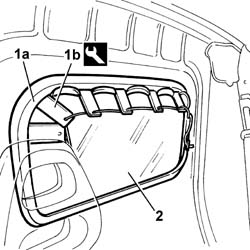
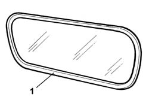
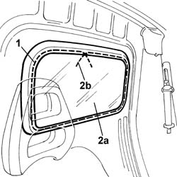

7027H12 PARTITION WINDOW - R.R.
- Path
- Procedures > 70 FITTINGS > 7027 LOAD CARRYING COMPARTMENTS > 7027H load compartment partitions > 7027H12 PARTITION WINDOW - R.R.
- Kind
- repair procedure (removal / refitting; the operation number is the code)
- Applies to
- all engines; all production periods
- Interactive page
- https://sloeber94.github.io/elrnDB-fDbl/en/#/2585107
Applies to: all engines; all production periods
Applies to: all engines; all production periods
 Removing
Removing
 Refitting
RefittingRaise the driver side front seat
1. Working inside the car, position the tool (1b) level with the seal (1a).
 | Name | Country |
|---|---|---|
1b | Tool for removing front window seal | 1.878.085.000 |
2. Move the tool along the entire perimeter of the window and remove the window complete with frame and seal.

Applies to: all engines; all production periods
1. Check that the seal is undamaged.
If it has, replace the seal.

Applies to: all engines; all production periods
Refitting
Removing1. Run an ordinary rope along the entire perimeter of the moulded seal, crossing the ends of the rope at the top of the window, leaving the ends on the inside.
2. Fit the window (2a) in its seating, and remove the rope starting from the end (2b), checking that the rubber seal fits perfectly on the bodywork flange.

Applies to: all engines; all production periods
Lower the front driver's seat.